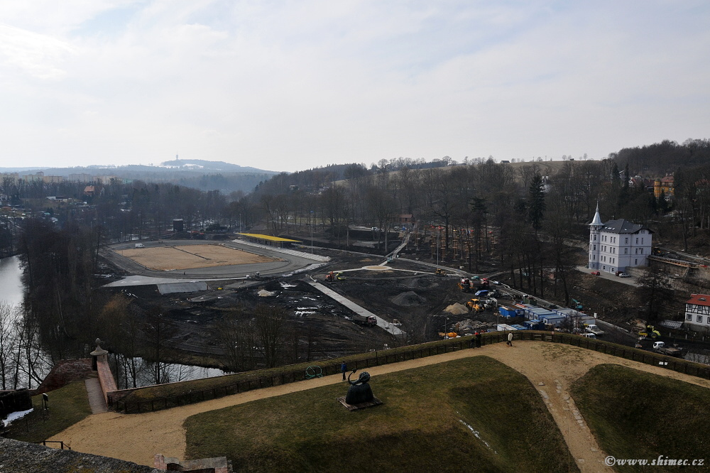
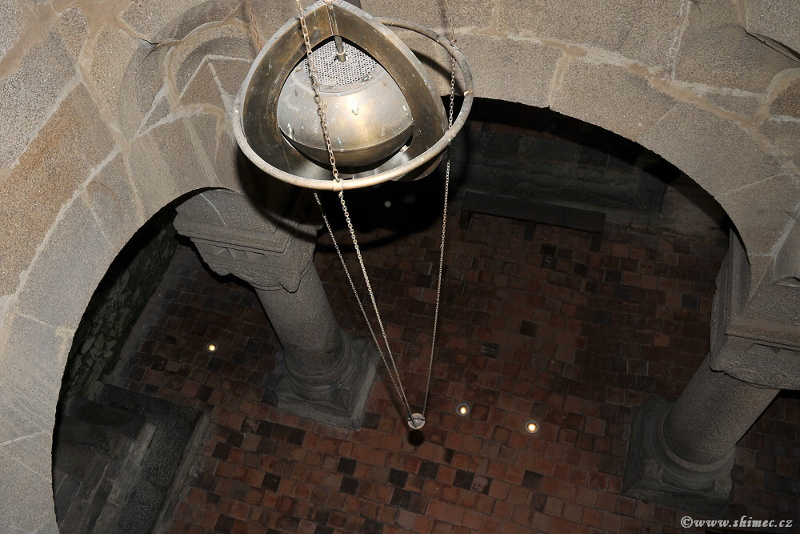

Vysoké napětí (VN)
Samostatné montážní týmy s oprávněním pro stavebně-montážní práce vysokého napětí v Karlovarském kraji i mimo něj.
Pracovníci jsou pravidelně školeni podle vyhlášky č. 50/1978 Sb. a vybaveni ochrannými pomůckami i speciálním nářadím.
Realizujeme
- stožárové a technologické části trafostanic 22/0,4 kV (35/0,4 kV)
- stavební části trafostanic a zednické výpomoci
- nadzemní i kabelová vedení nízkého i vysokého napětí včetně přípojek
- veřejné osvětlení
- kabelové soubory vysokého napětí (RAYCHEM, CELPAK), izolace a vedení SAX / PAS
- související zemní práce a zádlažby



